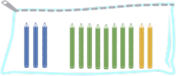

¿Qué son las sumas?
Llamamos suma a la acción de añadir, juntar o agregar elementos, cuando realizamos esta acción estamos
uniendo cantidades o conjuntos y para ello siempre debe haber un mínimo de dos elementos.
La humanidad ya hacía sumas antes de aprender a escribir o de tener un lenguaje. Se cree que muchas especies de animales
también saben sumar cantidades pequeñas.
Sabemos que dependiendo del lugar que ocupen los dígitos en una cifra, podrán representar unidades, decenas, centenas, unidades de mil, etc. De lo que se trata este método es de sumar unidades con unidades, decenas con decenas, centenas con centenas y así sucesivamente.
A continuación veremos cómo realizar la siguiente suma: 514 + 123Paso 1:
Primero debemos ubicar los sumandos uno debajo del otro, puedes imaginar líneas verticales que forman casillas. En la primera casilla de derecha a izquierda deben estar las unidades, en la segunda las decenas, en la tercera las centenas y así sucesivamente.

Paso 2:
Ahora sumamos los dígitos que están en una misma columna, empezamos por las unidades: 4 + 3 = 7. Ponemos este resultado en la casilla de las unidades de la respuesta, que estará ubicada bajo una línea horizontal.
Paso 3:
Seguimos con las decenas: 1 + 2 = 3, ubicamos esta suma en el lugar de las decenas de la respuesta.
Paso 4:
Finalmente operamos 5 + 1 = 6, poniendo ese número en la casilla reservada para las centenas de la respuesta final.
Por lo tanto, el resultado de la suma es seiscientos treinta y siete: 514 + 123 = 637
Sumar llevando acarreos
Cuando sumamos los números de una columna el resultado puede ser mayor a 9. Aprende qué hacer en esos casos:
Al sumar los valores posicionales de los números 514 y 123, ninguna de las sumas es mayor que 9. Sin embargo, esto no siempre es así, veamos el siguiente ejemplo: realicemos la suma 8728 + 5537.
Antes de empezar ubicamos los números uno sobre otro de tal forma que sus valores posicionales coincidan.
Paso 1:
Sumamos la columna de las unidades: 8 + 7 = 15, que significa una decena y cinco unidades. Ponemos el cinco en el lugar reservado para las unidades pero la decena debe ser sumada con las decenas, llevamos este uno a la columna que le corresponde.
A los números que llevamos hasta la siguiente columna los llamamos acarreos
Paso 2:
Cuando sumemos las decenas debemos adicionar el acarreo al resultado. En este caso tenemos: 2 + 3 = 5, más uno que llevamos, 6.
Paso 3:
Sumamos las centenas. Como esta vez no hay acarreos pendientes, la suma a realizar es simplemente 7 + 5 = 12. Ponemos el 2 en la casilla de centenas de la respuesta y pasamos el 1 como acarreo a la columna de las unidades de mil.
Paso 4:
Sumamos las unidades de mil. Teniendo en cuenta el acarreo, la suma a realizar es 8 + 5 + 1 = 14. Como no quedan más columnas por sumar ponemos el 14, de esta forma se obtiene el resultado: 8728 + 5537 = 14265.
Propiedades de la suma:
Comencemos aplicando una propiedad a una situación cotidiana en la vida:
Buscamos una mochila vacía y la abrimos. Primero metemos 3 cuadernos grandes y luego 6 cuadernos pequeños. ¿Cuántos cuadernos hay en la mochila?
Para resolver esta pregunta solo hay que sumar la cantidad de cuadernos grandes más la cantidad de cuadernos pequeños.
3 + 6 =
3 + 6 = 9
Hay 9 cuadernos en la mochila.
¿Seguiría habiendo 9 cuadernos en la mochila si hubiésemos metido primero los cuadernos pequeños y luego los grandes?
Vamos a verlo:
6 + 3 =
6 + 3 = 9
Sí, seguiría habiendo 9 cuadernos.
El resultado de la suma será el mismo sin importar el orden de los sumandos (que en este caso son 3 y 6).
Esta es la primera de las propiedades de la suma y la conocemos como PROPIEDAD CONMUTATIVA.
Es una propiedad muy útil cuando tienes que sumar dos cantidades y una de ellas es mayor que la otra. Si tienes que sumar 3 + 34, será más fácil si comienzas con 34 y le añades 3 que al revés. Cuando se tenga que hacer una suma, comienza con la cantidad mayor.
Ahora vamos con otro ejemplo con fines didácticos.
Buscamos un estuche vacío y metemos 3 lápices verdes, 8 lápices amarillos y 2 azules. ¿Cuántos lápices hay en el estuche?
Para saber cuántos hay los sumamos:
3 + 8 + 2 =
¿Cómo se resuelve esta suma?
- ¿Sumando primero tres más ocho y añadiéndole al resultado dos?
(3+8) + 2 =
- ¿O sumando primero ocho más dos y añadiéndole al resultado tres?
3 + (8+2) =

Puede resolverse de cualquiera de las dos maneras y el resultado va a ser el mismo.
Cuando tenemos tres o más sumandos, es posible comenzar sumando los dos primeros y al resultado sumarle el tercero, o al revés, comenzar sumando el segundo y el tercero y al resultado sumarle el primero.
Esta es la segunda de las propiedades de la suma y la conocemos como: PROPIEDAD ASOCIATIVA.
La propiedad asociativa también puede ayudarnos a resolver las sumas. En este caso es más fácil la segunda opción, comenzar sumando ocho más dos porque sabemos que da diez.
Sigamos con un último ejemplo cotidiano
Guardamos en la mochila 4 galletas de chocolate y 0 de avena. ¡No tenemos galletas de avena! ¿Cuántas galletas hay en total en la mochila?
4 + 0 = 4
Hay 4 galletas en la mochila.
La suma de cualquier número más cero (0) es igual al mismo número. Por eso el cero (0) es el ELEMENTO NEUTRO de la suma.
Para una comprensión más didáctica de la operación, ver el siguiente vídeo: